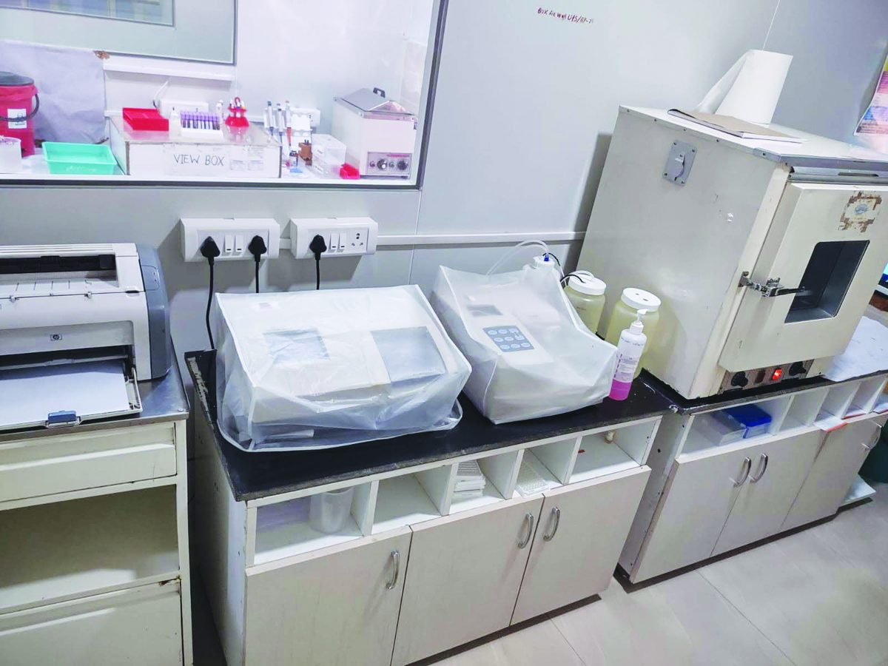

Disease Prevention & Treatment · Since 2016
Guru Nanak Rotary Bhagwan Mahaveer Dialysis Centre
Saving lives. Reducing financial burden.
For families battling kidney failure, dialysis is not optional — it is survival, and its recurring cost can crush an already struggling household. The Club helped establish dialysis centres in Secunderabad and Guntur that deliver life-saving treatment affordably, restoring relief, dignity and hope to the patients who need it most.
- Locations
- Guru Nanak Medical Centre, Secunderabad · St. Joseph Hospital, Guntur
- Beneficiaries
- Walk-in patients of all ages from economically weaker sections
- Partners
- Bhagwan Mahaveer Relief Trust · Indian Red Cross · TRF Global Grant · Granules India & VST (CSR)
Impact: 10,000+ dialysis procedures a year · ~₹3 Crore saved annually for beneficiaries · just ₹300 per session at GMC.